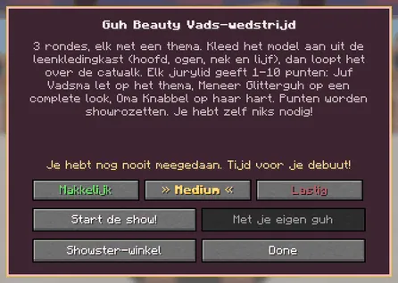
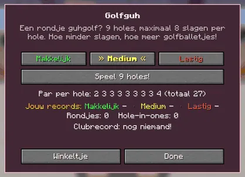
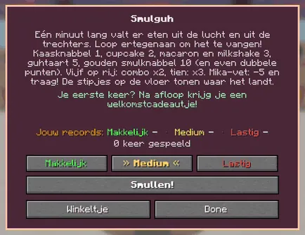
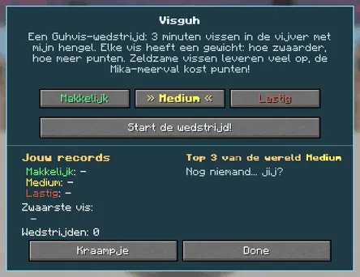
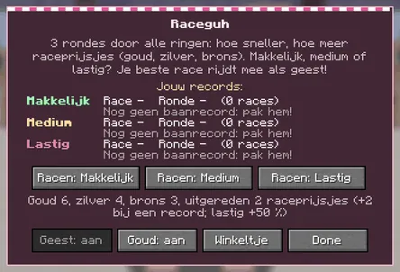

In almost every minigame you choose how hard you want it: easy, medium or hard.
Bij bijna elke minigame kies je hoe moeilijk je het wilt: makkelijk, medium of lastig.

The ShowguhDe Showguh
Three level buttons above Start de show!Drie niveauknoppen boven Start de show!
The MepguhDe Mepguh
Your record per level and the world record.Je record per niveau en het wereldrecord.

The GolfguhDe Golfguh
Par 27 on 9 holes; lastig blows.Par 27 op 9 holes; op lastig waait het.

The SmulguhDe Smulguh
One minute of food falling from the sky.Een minuut lang valt er eten uit de lucht.

The VisguhDe Visguh
Everyone in a contest plays the starter's level.Iedereen in een wedstrijd speelt het niveau van wie hem start.

The RaceguhDe Raceguh
Three race buttons, one per level.Drie raceknoppen, één per niveau.
Makkelijk, medium or lastigMakkelijk, medium of lastig
Every classic minigame now has three levels, with three buttons on its guh's screen. Medium is the game as you knew it (your old records count as medium). Every level has its own records and boards, the floating boards show all three, and lastig pays 50% more. (The Verstopguhhuis already had levels of its own.)
Elke klassieke minigame heeft nu drie niveaus, met drie knoppen in het scherm van zijn guh. Medium is het spel zoals je het kende (je oude records tellen als medium). Elk niveau heeft eigen records en borden, de zwevende borden laten ze alle drie zien, en lastig betaalt 50% meer. (Het Verstopguhhuis had al eigen niveaus.)
| GameSpel | MakkelijkMakkelijk | MediumMedium | LastigLastig |
|---|---|---|---|
| Guh Beauty | 60 s to dress, a mild jury (+1 from every judge)60 s aankleden, een milde jury (+1 van elk jurylid) | 45 s, as before45 s, zoals altijd | 30 s and a strict jury: off-theme pieces cost double30 s en een strenge jury: stukken die niet bij het thema passen kosten dubbel |
| Mika meppen | slower, fewer guh decoyslangzamer, minder guh-lokkertjes | as beforezoals altijd | faster, more decoys, gold Mikas rarersneller, meer lokkertjes, gouden Mika's zeldzamer |
| Guhgolf | 10 strokes a hole, no penalty stroke10 slagen per hole, geen strafslag | 8 strokes, penalty strokes8 slagen, strafslagen | 6 strokes; its own tees further back, par 36, a windmill twice as fast and extra slime bumpers (the wind is gone)6 slagen; eigen afslagen verder weg, par 36, een molen die twee keer zo snel draait en extra slijmbumpers (de wind is weg) |
| Vadsig eetfestijn | less Mika-vet, falls slowerminder Mika-vet, valt langzamer | as beforezoals altijd | more Mika-vet, falls 1.3× fastermeer Mika-vet, valt 1,3× sneller |
| Guhvissen | a long bite windowlang de tijd om te slaan | as beforezoals altijd | a short bite window, and fish can wriggle off the hookkort de tijd, en vissen kunnen van je haakje spartelen |
| Guhrace | a calm race guh, wide railseen rustige renguh, brede vangrails | as beforezoals altijd | a fast, stubborn race guh, Mika-pikkerseen snelle, eigenwijze renguh, Mika-pikkers |